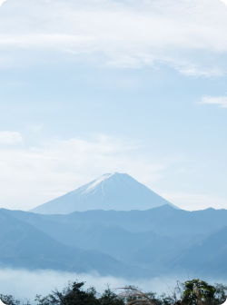
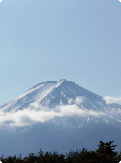
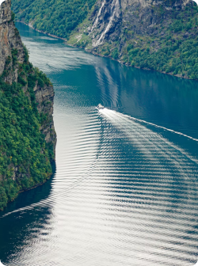
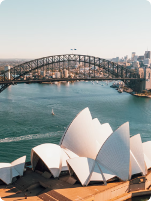

my travel journal.
Mount Fuji12 Jan, 2021 - 24 Jan, 2021View on Google Maps
JAPAN
Mount Fuji is the tallest mountain in Japan, standing at 3,776 meters (12,380 feet). Mount Fuji is the single most popular tourist site in Japan, for both Japanese and foreign tourists.

Geirangerfjord01 Oct, 2021 - 18 Nov, 2021
View on Google Maps
NORWAY
The Geiranger Fjord is a fjord in the Sunnmøre region of Møre og Romsdal county, Norway. It is located entirely in the Stranda Municipality.
Sydney Opera House27 May, 2021 - 8 Jun, 2021
View on Google Maps
AUSTRALIA
The Sydney Opera House is a multi-venue performing arts centre in Sydney. Located on the banks of the Sydney Harbour, it is often regarded as one of the 20th century's most famous and distinctive buildings